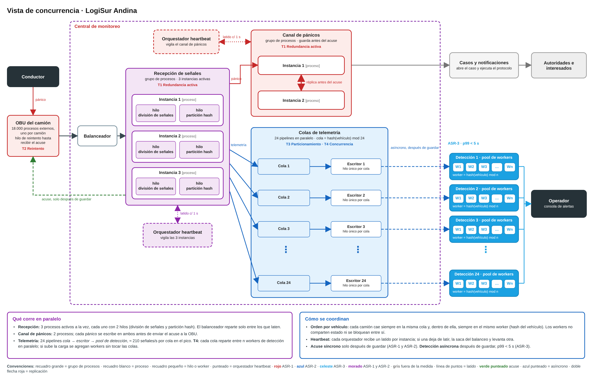
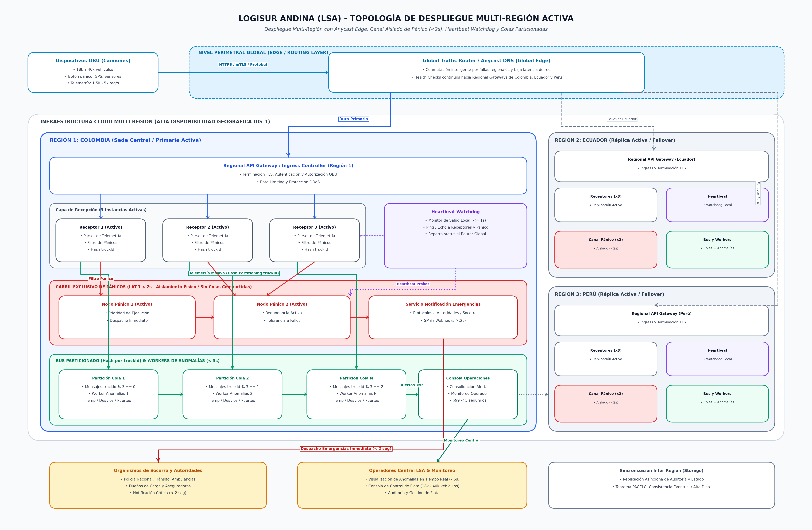
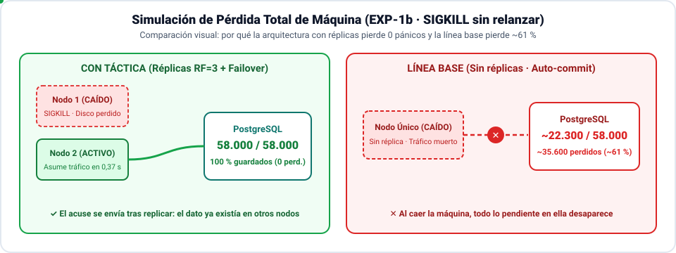

LogiSur Andina (LSA) · Propuesta de Arquitectura
Validada empíricamente con 75 corridas controladas en 12 contenedores Docker · Colombia, Ecuador y Perú

Disponibilidad (DIS-1)
100 %
0 pánicos perdidos ante SIGKILL y pérdida de nodo
Latencia Pánico (EXP-1c)
1,08 s
Meta < 2 s (antes: 4 min en paro nacional)
Pico 5.000/s (EXP-3)
0,75 s
24 colas · normaliza en ≤ 1,4 s (base: > 833 s)
Capacidad (ESC-2)
11.500/s
Lista para crecer de 18.000 a 40.000 camiones
Contexto de Negocio y los 4 ASR Críticos
Tres frentes (Central de Emergencias, Venta en Línea y LSA Plus) con aislamiento absoluto

Incidente crítico: 4 minutos de retraso en pánico durante paro nacional → Meta < 2 s
| ASR Crítico | Estímulo | Meta | Decisión Arquitectónica |
|---|---|---|---|
| DIS-1 ★ | Caída de servidor en ráfaga de pánicos | ≥ 99,99 % guardados (< 2 s) | Réplicas RF=3, acuse tras replicar, heartbeat |
| LAT-1 ★ | Pico de 5.000 señales/s | Guardado p99 < 1 min · 0 pérdidas | Receptores sin estado + carril exclusivo pánico |
| LAT-2 ★ | Pico sostenido de 5.000 señales/s (5 min) | Detección p99 < 5 s · 0 desorden | 24 colas hash(camionId) + 1 worker/cola |
| ESC-2 ★ | Flota crece 18.000 → 40.000 camiones | ≈ 11.000/s · 0 cambios de código | 24 particiones fijas + escalado horizontal |
Vista Funcional y de Concurrencia (Tácticas T1–T4)
Acuse síncrono tras replicar (durabilidad) separado de detección asíncrona en 24 pipelines

Vista Funcional · Clic para ampliar

Vista de Concurrencia · 3 receptores, 2 despachadores, 24 pipelines independientes
Vista de Contenedores y Aislamiento de Zonas
Ninguna falla o cierre de mes en LSA Plus puede impactar a la Central de Emergencias


Solo 2 conexiones asíncronas entre Zona Crítica y Zona de Clientes
Topología de Despliegue: Multi-AZ y Multi-Región Activa
2 Zonas de Disponibilidad en Bogotá + Failover Activo Colombia / Ecuador / Perú (Anycast DNS · PACELC)

Nivel 1: Región Bogotá (Zona A y Zona B con réplica sincrónica y clúster de 3 nodos de colas)

Nivel 2: Multi-Región Activa (Colombia primaria · Ecuador y Perú failover)
Simulador Interactivo de Fallas (EXP-1, EXP-1b y EXP-1c)
Explora en vivo el impacto de matar nodos con SIGKILL y ajustar la sesión de 6 s a 2 s
⚡ Selecciona el escenario experimental real:
